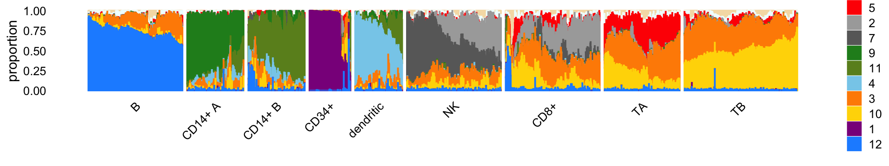

Last updated: 2021-01-10
Checks: 7 0
Knit directory: single-cell-topics/analysis/
This reproducible R Markdown analysis was created with workflowr (version 1.6.2.9000). The Checks tab describes the reproducibility checks that were applied when the results were created. The Past versions tab lists the development history.
Great! Since the R Markdown file has been committed to the Git repository, you know the exact version of the code that produced these results.
Great job! The global environment was empty. Objects defined in the global environment can affect the analysis in your R Markdown file in unknown ways. For reproduciblity it’s best to always run the code in an empty environment.
The command set.seed(1) was run prior to running the code in the R Markdown file. Setting a seed ensures that any results that rely on randomness, e.g. subsampling or permutations, are reproducible.
Great job! Recording the operating system, R version, and package versions is critical for reproducibility.
Nice! There were no cached chunks for this analysis, so you can be confident that you successfully produced the results during this run.
Great job! Using relative paths to the files within your workflowr project makes it easier to run your code on other machines.
Great! You are using Git for version control. Tracking code development and connecting the code version to the results is critical for reproducibility.
The results in this page were generated with repository version 05294aa. See the Past versions tab to see a history of the changes made to the R Markdown and HTML files.
Note that you need to be careful to ensure that all relevant files for the analysis have been committed to Git prior to generating the results (you can use wflow_publish or wflow_git_commit). workflowr only checks the R Markdown file, but you know if there are other scripts or data files that it depends on. Below is the status of the Git repository when the results were generated:
Ignored files:
Ignored: data/droplet.RData
Ignored: data/pbmc_68k.RData
Ignored: data/pbmc_purified.RData
Ignored: data/pulseseq.RData
Ignored: output/droplet/diff-count-droplet.RData
Ignored: output/droplet/fits-droplet.RData
Ignored: output/droplet/rds/
Ignored: output/pbmc-68k/fits-pbmc-68k.RData
Ignored: output/pbmc-68k/rds/
Ignored: output/pbmc-purified/diff-count-pbmc-purified.RData
Ignored: output/pbmc-purified/fits-pbmc-purified.RData
Ignored: output/pbmc-purified/rds/
Ignored: output/pulseseq/diff-count-pulseseq.RData
Ignored: output/pulseseq/fits-pulseseq.RData
Ignored: output/pulseseq/rds/
Untracked files:
Untracked: analysis/plots_purified_pbmc_cache/
Untracked: plots/
Unstaged changes:
Modified: analysis/temp.R
Note that any generated files, e.g. HTML, png, CSS, etc., are not included in this status report because it is ok for generated content to have uncommitted changes.
These are the previous versions of the repository in which changes were made to the R Markdown (analysis/clusters_68k_pbmc.Rmd) and HTML (docs/clusters_68k_pbmc.html) files. If you’ve configured a remote Git repository (see ?wflow_git_remote), click on the hyperlinks in the table below to view the files as they were in that past version.
| File | Version | Author | Date | Message |
|---|---|---|---|---|
| Rmd | 05294aa | Peter Carbonetto | 2021-01-10 | workflowr::wflow_publish(“clusters_68k_pbmc.Rmd”) |
| Rmd | df0b201 | Peter Carbonetto | 2021-01-09 | Small edit to clusters_68k_pbmc.Rmd. |
| html | 66159f4 | Peter Carbonetto | 2021-01-09 | Adjusted dimensions of Structure plot; cleaned up files in analysis |
| Rmd | 116cbc8 | Peter Carbonetto | 2021-01-09 | workflowr::wflow_publish(“clusters_68k_pbmc.Rmd”, verbose = TRUE) |
| html | 7edfc15 | Peter Carbonetto | 2021-01-09 | Improved Structure plot in clusters_68k_pbmc analysis; added |
| html | 92ebf75 | Peter Carbonetto | 2021-01-09 | Improved Structure plot in clusters_68k_pbmc analysis. |
| Rmd | f6ee94f | Peter Carbonetto | 2021-01-09 | workflowr::wflow_publish(“clusters_68k_pbmc.Rmd”, verbose = TRUE) |
| html | 1fd699d | Peter Carbonetto | 2021-01-08 | Build site. |
| Rmd | 6bb17bb | Peter Carbonetto | 2021-01-08 | workflowr::wflow_publish(“clusters_68k_pbmc.Rmd”) |
| Rmd | d857fc3 | Peter Carbonetto | 2021-01-08 | Added more clusters to 68k data. |
| Rmd | 7b0b312 | Peter Carbonetto | 2021-01-08 | Working on clustering of 68k pbmc data. |
| html | 3797287 | Peter Carbonetto | 2021-01-08 | First (very preliminary) build of clusters_68k_pbmc analysis. |
| Rmd | 7898f7d | Peter Carbonetto | 2021-01-08 | workflowr::wflow_publish(“clusters_68k_pbmc.Rmd”) |
| Rmd | b9b3185 | Peter Carbonetto | 2020-12-30 | A little more re-organizing. |
Here we identify clusters of cells from the mixture proportions estimated in the 68k PBMC data.
Load the packages used in the analysis below, as well as additional functions that we will use to generate some of the plots.
library(Matrix)
library(fastTopics)
library(ggplot2)
library(cowplot)Load the count data.
load("../data/pbmc_68k.RData")Load the \(K = 12\) Poisson NMF model fit.
fit <- readRDS("../output/pbmc-68k/rds/fit-pbmc-68k-scd-ex-k=12.rds")$fit
fit <- poisson2multinom(fit)From the PCs of the mixture proportions, we define clusters…
pca <- prcomp(fit$L)$x
n <- nrow(pca)
x <- rep("U",n)
pc2 <- pca[,2]
pc4 <- pca[,4]
pc8 <- pca[,8]
pc10 <- pca[,10]
x[pc2 < -0.4] <- "B"
x[pc4 < -0.15] <- "CD14+"
x[pc8 > 0.2] <- "dendritic"
x[pc10 > 0.1] <- "CD34+"Add text here.
rows <- which(x == "U")
n <- length(rows)
fit2 <- select_loadings(fit,loadings = rows)
pca <- prcomp(fit2$L)$x
y <- rep("T",n)
pc1 <- pca[,1]
pc2 <- pca[,2]
y[pc2 > -1.7*pc1 - 0.11] <- "CD8+"
y[pc2 > -1.55*pc1 + 0.55] <- "NK"
x[rows] <- yAdd text here.
rows <- which(x == "CD14+")
n <- length(rows)
fit2 <- select_loadings(fit,loadings = rows)
pca <- prcomp(fit2$L)$x
y <- rep("CD14+ A",n)
pc1 <- pca[,1]
y[pc1 > 0] <- "CD14+ B"
x[rows] <- yAdd text here.
rows <- which(x == "T")
n <- length(rows)
fit2 <- select_loadings(fit,loadings = rows)
pca <- prcomp(fit2$L)$x
y <- rep("T",n)
pc1 <- pca[,1]
pc2 <- pca[,2]
y[pc2 < -1.5*pc1 - 0.05] <- "Treg"
x[rows] <- yIn summary, we have subdivided the cells into 9 subsets:
samples$cluster <- factor(x)
table(samples$cluster)
#
# B CD14+ A CD14+ B CD34+ CD8+ dendritic NK T
# 3492 1714 2432 218 11354 774 9873 24466
# Treg
# 14256The Structure plot summarizes the mixture proportions in each of the 9 clusters:
set.seed(1)
topic_colors <- c("darkmagenta", # CD34+
"darkgray", # NK 2
"darkorange", # T cells 2
"skyblue", # dendritic
"red", # T cells 3
"wheat", # (unknown)
"dimgray", # NK 1
"azure", # (unknown)
"forestgreen", # CD14+ A
"gold", # T cells 1
"olivedrab", # CD14+ B
"dodgerblue") # B cells
topics <- c(6,8,5,2,7,9,11,4,3,10,1,12)
x <- samples$cluster
x <- factor(x,c("B","CD14+ A","CD14+ B","CD34+","dendritic",
"NK","CD8+","Treg","T"))
rows <- sort(c(sample(which(x == "B"),500),
sample(which(x == "CD14+ A"),300),
sample(which(x == "CD14+ B"),300),
which(x == "CD34+"),
sample(which(x == "CD8+"),500),
sample(which(x == "dendritic"),250),
sample(which(x == "NK"),500),
sample(which(x == "T"),600),
sample(which(x == "Treg"),400)))
p1 <- structure_plot(select_loadings(fit,loadings = rows),
grouping = x[rows],topics = topics,
colors = topic_colors[topics],
perplexity = c(70,30,30,30,30,70,70,70,70),
n = Inf,gap = 25,num_threads = 4,verbose = FALSE)
print(p1)
Save the clustering of the 68k PBMC data to an RDS file.
saveRDS(samples,"clustering-pbmc-68k.rds")
sessionInfo()
# R version 3.6.2 (2019-12-12)
# Platform: x86_64-apple-darwin15.6.0 (64-bit)
# Running under: macOS Catalina 10.15.7
#
# Matrix products: default
# BLAS: /Library/Frameworks/R.framework/Versions/3.6/Resources/lib/libRblas.0.dylib
# LAPACK: /Library/Frameworks/R.framework/Versions/3.6/Resources/lib/libRlapack.dylib
#
# locale:
# [1] en_US.UTF-8/en_US.UTF-8/en_US.UTF-8/C/en_US.UTF-8/en_US.UTF-8
#
# attached base packages:
# [1] stats graphics grDevices utils datasets methods base
#
# other attached packages:
# [1] cowplot_1.0.0 ggplot2_3.3.0 fastTopics_0.4-13 Matrix_1.2-18
#
# loaded via a namespace (and not attached):
# [1] ggrepel_0.9.0 Rcpp_1.0.5 lattice_0.20-38
# [4] tidyr_1.0.0 prettyunits_1.1.1 assertthat_0.2.1
# [7] zeallot_0.1.0 rprojroot_1.3-2 digest_0.6.23
# [10] R6_2.4.1 backports_1.1.5 MatrixModels_0.4-1
# [13] evaluate_0.14 coda_0.19-3 httr_1.4.2
# [16] pillar_1.4.3 rlang_0.4.5 progress_1.2.2
# [19] lazyeval_0.2.2 data.table_1.12.8 irlba_2.3.3
# [22] SparseM_1.78 whisker_0.4 rmarkdown_2.3
# [25] labeling_0.3 Rtsne_0.15 stringr_1.4.0
# [28] htmlwidgets_1.5.1 munsell_0.5.0 compiler_3.6.2
# [31] httpuv_1.5.2 xfun_0.11 pkgconfig_2.0.3
# [34] mcmc_0.9-6 htmltools_0.4.0 tidyselect_0.2.5
# [37] tibble_2.1.3 workflowr_1.6.2.9000 quadprog_1.5-8
# [40] viridisLite_0.3.0 crayon_1.3.4 dplyr_0.8.3
# [43] withr_2.1.2 later_1.0.0 MASS_7.3-51.4
# [46] grid_3.6.2 jsonlite_1.6 gtable_0.3.0
# [49] lifecycle_0.1.0 git2r_0.26.1 magrittr_1.5
# [52] scales_1.1.0 RcppParallel_4.4.2 stringi_1.4.3
# [55] farver_2.0.1 fs_1.3.1 promises_1.1.0
# [58] vctrs_0.2.1 tools_3.6.2 glue_1.3.1
# [61] purrr_0.3.3 hms_0.5.2 yaml_2.2.0
# [64] colorspace_1.4-1 plotly_4.9.2 knitr_1.26
# [67] quantreg_5.54 MCMCpack_1.4-5